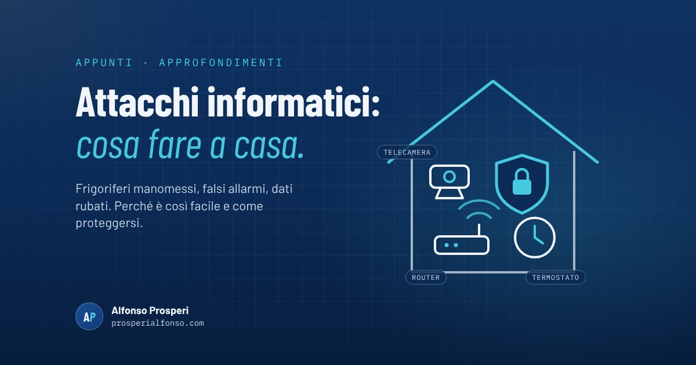

Frigoriferi dei supermercati che si scaldano da soli, scuole evacuate per una mail, aerei scortati dai caccia. Nelle ultime settimane l'Europa, Italia compresa, ha vissuto una serie di attacchi informatici e azioni di disturbo che hanno fatto parlare tutti. Vediamo con calma cosa è successo, perché è stato così facile e, soprattutto, cosa possiamo fare noi a casa.
Cosa è successo, in breve
- Frigoriferi manomessi a distanza. A inizio novembre qualcuno è entrato nei sistemi che regolano frigoriferi e congelatori di oltre cento supermercati europei, alcuni anche in Italia, e ha alzato le temperature. In Francia è toccato anche ad alcune celle dell'istituto che conserva il sangue, senza danni al contenuto.
- Falsi allarmi bomba via mail. In una settimana hanno riguardato più di trenta voli. Mercoledì 11 novembre la stessa mail è arrivata a centinaia di scuole italiane: almeno 300 sono state evacuate. Nessuna bomba è stata trovata.
- Dati rubati. Tra i casi resi noti, un attacco alla società che costruisce il tunnel del Brennero e la pubblicazione sul dark web di dati personali di un ministro.
Due precisazioni importanti. Per i supermercati il Governo ha parlato di impatto limitato e di nessun rischio per la salute. E su chi ci sia dietro non c'è ancora certezza: sono arrivate rivendicazioni di gruppi filorussi, ma gli esperti hanno dubbi e nessuna autorità ha collegato ufficialmente tutti gli episodi.
Perché è così facile
La cosa che colpisce è quanto poco sia servito. Non parliamo di operazioni da film, ma di tre debolezze molto comuni.
- Apparecchi vecchi e mai aggiornati. Gran parte degli impianti colpiti era datata e non riceveva più aggiornamenti di sicurezza. Molti dispositivi vengono collegati a Internet e poi dimenticati, a volte con la password con cui escono dalla fabbrica.
- Una mail scritta bene. Per svuotare centinaia di scuole è bastato un messaggio. Non serve "bucare" niente: basta che qualcuno ci creda.
- L'intelligenza artificiale. Secondo diversi esperti rende più rapido ed economico trovare i punti deboli e scrivere messaggi credibili, in qualsiasi lingua.
Cosa c'entra casa nostra
Il router del Wi-Fi, la telecamera in giardino, il termostato o il condizionatore che comandiamo dal telefono funzionano come quei frigoriferi: sono piccoli computer sempre collegati a Internet. Nessuno ha interesse a spegnerci il riscaldamento, ma un dispositivo lasciato con la password di fabbrica può essere usato per spiarci o come "ponte" per attacchi ad altri. La buona notizia è che per proteggerli basta poco.
Cinque cose da fare da domani
- Cambia le password di fabbrica. Parti dal router e dalle telecamere: se la password è ancora quella scritta sull'etichetta o nel manuale (tipo "admin"), sostituiscila con una lunga e diversa dalle altre.
- Fai gli aggiornamenti. Telefono, computer, router, smart TV: attiva gli aggiornamenti automatici dove ci sono. Se un apparecchio non ne riceve più da anni, valuta di sostituirlo o di scollegarlo da Internet.
- Attiva la verifica in due passaggi. Su mail, WhatsApp, banca e social: anche se qualcuno scopre la password, senza il secondo codice non entra.
- Diffida dei messaggi "urgenti". Mail, SMS o telefonate che mettono fretta o paura vanno verificati da un altro canale: chiama tu la banca, la scuola o il parente, usando un numero che conosci già.
- Tieni una copia delle cose importanti. Foto, documenti e contatti anche su un disco esterno o su carta, non solo sul telefono.
E se per tre giorni non funzionasse niente?
Regno Unito, Francia, Paesi Bassi e Svezia consigliano già alle famiglie di essere autonome per almeno tre giorni senza corrente, bancomat e telefoni. Non è un invito al panico: vale per un attacco informatico come per una nevicata o un guasto. Il kit di base è semplice:
- acqua (circa tre litri al giorno a persona) e cibo che non ha bisogno di frigorifero o cottura
- una torcia con le pile di scorta e una radio a pile
- un power bank carico
- un po' di contanti
- i farmaci abituali e i numeri utili scritti su carta
Non serve comprare tutto insieme: basta aggiungere qualcosa alla spesa di tanto in tanto e controllare le scadenze un paio di volte l'anno.
Nessuno di noi può fermare un attacco a un intero Paese. Ma una password cambiata, un aggiornamento fatto e una torcia nel cassetto sono già un buon inizio.
Fonti
- Il Post, Una settimana di attacchi hacker e allarmi bomba in Italia e in Europa, in ordine (9 novembre 2026)
- Reuters su Internazionale, almeno 300 scuole italiane evacuate per allarmi bomba via mail (11 novembre 2026)
- Sky TG24, Attacchi hacker ai supermercati in Europa, Palazzo Chigi: "In Italia impatto limitato" (3 novembre 2026)
- Agenzia per la Cybersicurezza Nazionale, richiamo urgente alle misure di verifica e mitigazione per i sistemi connessi
- La Notizia, Acqua, cibo e contanti per 72 ore: la campagna "Be Ready" del Regno Unito (25 ottobre 2026)
- Agenzia svedese per la protezione civile, le basi della preparazione in casa